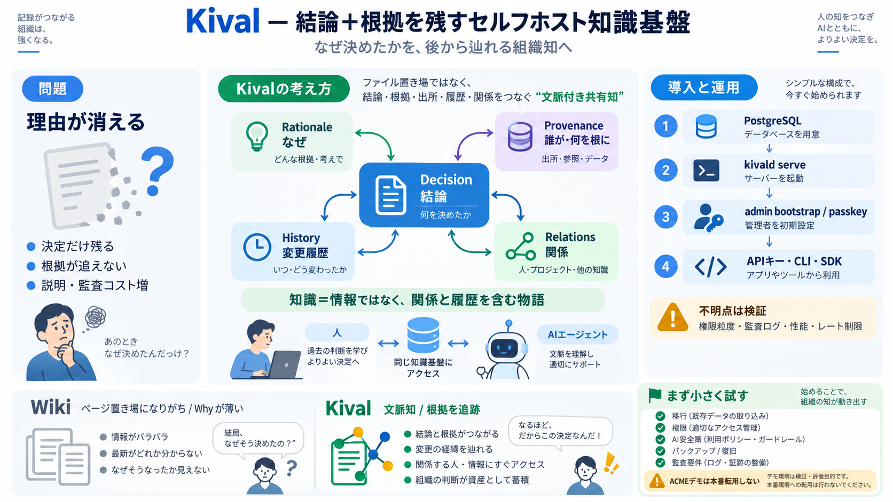

KIVAL UK LTD overview - Find and update company information - GOV.UK
Registered office address : 26 Swallow Close, Chafford Hundred, Grays, England, RM16 6RH Company status : Active C…

Kivalは、単なるファイル置き場ではなく、議論・履歴・関係・プロヴナンス（出所/根拠）までを“文脈付きの共有知”として管理するセルフホスト型システムです。
このデッキは、提示README内容を根拠に「狙い／運用含意／注意点」を整理します（性能・監査・権限粒度などは不明点として明示）。
時間とともに、意思決定の経緯（なぜそうしたか）が失われ、結論だけが残って説明が途切れます。
Kivalの焦点は「知識＝情報」ではなく、「知識＝関係と履歴を含む物語」を保つことです。
Kivalの価値は、同じ知識空間での協働（Shared knowledge）と、更新されても経緯を追える連続性（Continuity）を両立する点にあります。
環境やツールが変わっても理解可能な“持続する文脈”（Durable context）を目指し、知識とその根拠を切り離しません。
READMEの初期導線は、PostgreSQL準備 → kivald serve起動 → admin bootstrapでpasskey登録、という流れです。
不明点：DATABASE_URL等の具体手順、権限スコープ、デフォルト設定の範囲。
提示例では、意思決定の追跡、状態要約からの新規オブジェクト作成、インシデントをフォローアップ知識に変換する運用が想定されています。
CLI、APIキー、SDK（Rust/TypeScript）で同じアクセスモデルに基づき操作できることが強調されています。
不明点：レート制限、監査ログの項目、エージェントの安全策（誤リンク/誤作成対策）。
Wikiのように“ページを置く”だけでなく、意思決定や議論の経緯（履歴・関係・プロヴナンス）を知識オブジェクトに紐づけ続ける点が差です。
評価用の“ACMEデモ”を本番に転用しない注意が明確にあります。
passkey登録とAPIキー、さらにセキュリティポリシーの存在が示されています。
不明点：権限の粒度、監査ログ仕様、秘密情報の取り扱い、レート制限、脆弱性対応SLA。
価値を最大化するには、データ移行・権限テスト・エージェント安全性・バックアップ/復旧・監査要件の適合を小規模で検証すべきです。
Kivalの強みは、意思決定トレーサビリティと“運用知の循環（インシデント→学習→次の判断）”にあります。
不明点が残る領域（権限粒度、監査、性能、連携成熟度）を先に潰すほど成功確率が上がります。
Kivalは「文脈付きの共有知」として、意思決定の経緯を追える基盤をセルフホストで提供しようとしています。
あなたの想定運用（部門規模、既存ツール、AIエージェントの使い方、監査要件）が分かれば、確認チェックリストに落とし込みます。
Registered office address : 26 Swallow Close, Chafford Hundred, Grays, England, RM16 6RH Company status : Active C…
Title: Docker Compose Deployment - Greptile ##### Getting Started. ##### Code Review. ##### Self-Hosting. ##### Account.…
Title: KIVAL UK LTD persons with significant control - Find and update company information - GOV.UK ## Cookies on Compan…
Title: KIVAL UK LTD people - Find and update company information - GOV.UK ## Cookies on Companies House services. We use…
Kival Singh Email & Phone Number | Lenmed Business Intelligence Developer and Analyst Contact Information. ### Business …